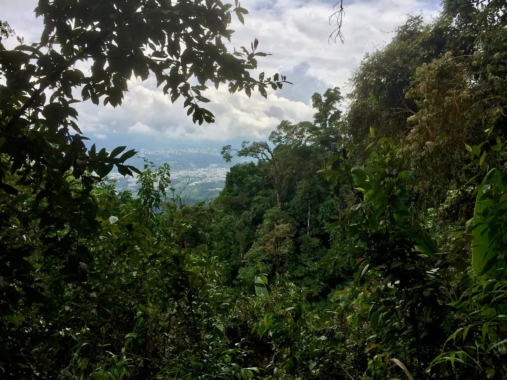

✈️ Flughafen Pereira
~1 Std. 40 Min. mit dem Auto
Das einfachste Tor zur kolumbianischen Kaffeezone. Tägliche Flüge aus Bogotá, Medellín, Cali und Miami.
Internationale AnkunftEcoparque Peñas Blancas ist ein Naturreservat in Calarcá, mitten in der kolumbianischen Kaffeezone, wo Fels, Nebelwald und die Legende des Cacique Calarcá aufeinandertreffen. Klettern, Abseilen, Höhlentouren, Wandern und Camping auf 2.430 Höhenmetern.
 Zentralanden
Zentralanden
Calarcá ist sehr gut angebunden. Wenn du sowieso nach Salento, ins Cocora-Tal oder nach Pereira reist, ist ein Tag in Peñas Blancas die beste Idee.
Das einfachste Tor zur kolumbianischen Kaffeezone. Tägliche Flüge aus Bogotá, Medellín, Cali und Miami.
Internationale AnkunftWenn du schon in Salento bist, passt ein halber Tag in Peñas Blancas perfekt in dein Kaffee-Reiseprogramm.
Idealer TagesausflugHauptstadt von Quindío. Nimm einen Jeep Willys vom Plaza de Mercado in Calarcá nach La Virginia.
Am nächstenWer Kolumbien bereist, muss in die Kaffeezone. Peñas Blancas gehört in jede Backpacking-Route.
BackpackingEine Drohnenansicht vom Wanderweg, den Felsen und dem 360°-Panorama über Quindío.

📹 Video von Mosquera Music · Auf YouTube ansehen

Wald
Nebelwald
Fels
280-m-Wände
Gipfel
2.430 m ü. NNIm Dorf La Virginia, oberhalb von Calarcá, erheben sich die weißen Felsen wie ein Naturbalkon über Quindío. Der Ökopark schützt diesen alten Berg — Heimat der Legende des Cacique Calarcá und der Quimbaya- und Pijao-Kulturen.
Hier gehen Abenteuer und Naturschutz Hand in Hand: Jeder Besuch unterstützt einen Wald, in dem wir bereits mehr als 20.000 Bäume gepflanzt haben.
Vom ruhigen Waldspaziergang bis zum kompletten Klettertag an 80-Meter-Wänden.
Natürliche Felswände bis 280 Meter, komplett vertikal. Routen für Anfänger und Fortgeschrittene, mit Guide und zertifizierter Ausrüstung.
Abenteuer · UIAASteige bis zu 80 Meter nach internationalen Standards ab. Kontrolliert und sicher, ohne Vorerfahrung.
Abenteuer · UIAAErkunde tiefe Höhlen auf den Spuren der Legende vom Cacique Calarcá. Eine Expedition ins feuchte, stille Innere des Bergs.
Abenteuer · Kultur3,2 km durch heimischen Wald, Aussichtspunkte und Aufforstungsflächen. Ideal für Familien, Paare und Vogelbeobachter.
NaturDer Nebelwald des Quindío beherbergt Dutzende Arten. Bring dein Fernglas mit — Tukane, Kolibris und Greifvögel warten.
Natur · BirdingMini-Seilrutsche von 40 Metern über den Wald. Perfekt für Kinder und alle, die Adrenalin ohne große Höhe wollen.
FamilieFußball (8er-Team), Volleyball, Kinderspiele und Beobachtungsbahnen. Open-Air-Räume für Gruppen.
Gruppen · FamilieWorkshops und Führungen für Schulen und Gruppen: Aufforstung, Tierwelt von Quindío, Quimbaya/Pijao-Kultur.
Schulen · GruppenDer Wanderweg-Eintritt ist sehr günstig. Abenteueraktivitäten und Übernachtung werden pro Gruppe kalkuliert — schreib uns, wir bauen deinen Plan.
Öko-Wanderweg
Klettern · Abseilen · Höhlen
Übernachtung am Berg
💬 Für aktuelle Preise schreib uns auf WhatsApp oder ruf an: +57 310 396 7951 · +57 300 658 7163.
Der Berg nachts ist etwas Besonderes. Wach auf zum Vogelgesang und dem Duft des feuchten Walds.

Eine geräumige, gemütliche Hütte, ideal für Gruppen, Familien oder ein ruhiges Retreat. Bis zu 10 Personen.

Weiträumig mit Plattformen, Drainage, Gemeinschaftsküche und Sanitäranlagen. Privatsphäre und Stille in der Natur.

Traditionelle Quindío-Küche mit frischen lokalen Zutaten. Typische Mittagessen, Zuckerrohrsaft und lokaler Kaffee.
„Vor der Ankunft der spanischen Eroberer versteckte der Cacique Calarcá das Gold seines Volkes in den Höhlen und weißen Felsen des Bergs. Wer heute über diese Felsen geht, geht durch die Geschichte der Pijao und Quimbaya."
— Mündliche Überlieferung des Quindío
Ein kleiner Vorgeschmack auf die Landschaft, die dich erwartet. Für echte Parkfotos folge uns auf @ecoparquepenasblancas.
Der Park empfängt Besucher Mittwoch bis Montag tagsüber. Wir empfehlen früh zu kommen, um das beste Licht im Wald zu erleben.
Für Klettern, Abseilen und Höhlentouren bitte im Voraus reservieren — wir koordinieren Guide und Ausrüstung.
💡 Beste Zeit für Fotos und ruhige Wanderungen: 9:00–11:30 Uhr.
Dorf La Virginia, 30–40 Min. vom Zentrum Calarcá. Mitten in der kolumbianischen Kaffeezone, nahe Armenia, Salento und Filandia.
Calarcá, Quindío · Kolumbien. 2.430 m ü. NN in den Zentralanden, in der Coffee Cultural Landscape.
In Google Maps öffnenEntfernungen (ca.)
Alles, was du vor dem Besuch wissen musst.
Der Wanderweg-Eintritt kostet ab COP $7.000 pro Person und beinhaltet ein Getränk. Abenteueraktivitäten und Übernachtung werden separat über WhatsApp abgerechnet.
Im Dorf La Virginia, Gemeinde Calarcá, Departement Quindío. Ca. 30–40 Min. vom Zentrum Calarcá über eine Bergstraße.
Nimm einen Jeep Willys am Plaza de Mercado in Calarcá. Express-Fahrt zum Parkplatz: ca. COP $30.000.
Nein. Wir arbeiten mit Guides, alle Ausrüstung erfüllt den internationalen UIAA-Standard. Anfänger, Familien und Gruppen willkommen.
Geschlossene Schuhe mit gutem Grip, lange Hose, Wasser, Repellent, Sonnencreme, leichte Jacke. Temperatur: 12–20 °C.
Ja. Kinder mit Begleitperson. Haustiere mit Leine und aktuellem Impfpass willkommen.
Ja — Restaurant mit Quindío-Küche (nach Reservierung), Hütte für bis zu 10 Personen und Campingplatz mit Gemeinschaftsküche, Bädern und Duschen.
Für Führungen und Abenteueraktivitäten: Mittwoch bis Montag, 9:00–15:00 Uhr. Vor dem Besuch immer auf WhatsApp bestätigen.
Der Park ist ein Reservat: nicht rauchen, kein Alkohol/Drogen, keine Waffen. Müll wieder mitnehmen. Hilf uns, den Wald zu schützen.
Die Quimbaya- und Pijao-Überlieferung erzählt, dass der Cacique Calarcá den Schatz seines Volkes in den Höhlen und weißen Felsen versteckte, bevor die Spanier kamen. Die Höhlen heute zu durchwandern ist wie in diese alte Geschichte einzutreten.
Schreib uns auf WhatsApp, um einen Besuch zu reservieren, Abenteueraktivitäten zu organisieren, eine Unterkunft zu buchen oder einen Plan für deine Gruppe zu erstellen.


In 4 Schritten auf den Berg
Der Park liegt in La Virginia, ca. 30–40 Min. von Calarcá entfernt. Bergstraße — langsam fahren, du kommst an.
Ankunft in Calarcá
Calarcá liegt 10 Min. von Armenia. Mit dem Bus: am Terminal Calarcá aussteigen und zum Plaza de Mercado.
Jeep Willys nach La Virginia
Am Plaza de Mercado einen Jeep Willys zum Ökopark nehmen. Express-Fahrt zum Parkplatz ca. COP $30.000.
Besuch koordinieren
Vor der Fahrt auf WhatsApp Guide, Ausrüstung oder Unterkunft bestätigen. Handynetz oben begrenzt.
Das Nötige einpacken
Geschlossene Schuhe, lange Hose, Wasser, Repellent, Sonnencreme, leichte Jacke. Temperatur: 12–20 °C.